Panhandler’s Bus Fee
You want to go home but the 8 dollars you have in your pocket are not enough to cover the 12
dollar bus fare. Because you happen to be near Las Vegas, you decide to fix your problem by
gambling.
The game you play is structured as follows: in each turn, you bet some amount of money and a
wheel is spun. If the wheel lands on a good sector, you gain the amount of money you bet. If not,
you lose the amount of money you bet. On this wheel, you have probability 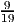 of winning a
turn.
You decide to play The Best Strategy with a goal of 10 dollars in mind. That is, at each turn, you
bet as much money as you can to reach 10 dollars in one turn. For example, if you have 6 dollars,
you would bet 4 dollars so that you would either win the game or you would have to take another
turn with 2 dollars leftover.
Collecting 10 total dollars means that you ”win a game”, whereas losing all the money you start
out with means you ”lose a game”. If you win a game, you replay the game with the same strategy
starting with 8 dollars, saving the rest of whatever amount you currently have. Losing a game
here means that you lose the 8 dollars you start out with; you stop playing when this
happens.
What is the probability of amassing 12 dollars before losing a game?
Solution: Recall the following graph. The green arrows signify that you would restart the game with 8 dollars out of your current sum of money if you hit the 10 dollar goal in your current game.
Collecting 12 total dollars would occur only if you win two consecutive games, because each game
gives you a gain of 2 dollars.
Denote pi,j to be the probability of collecting 12 dollars when you have i dollars of betting money
in your current game and you have j saved dollars in your pocket. The value we desire is p8,0.
Assume for simplicity that p0,j = 0 for all j, i.e, if you lose the game, you stop playing no matter
how much money you have saved. We will get rid of this assumption later on. reflecting boundary
First, we must consider all possible sample paths in order to determine what numbers i and j will
take. Let W denote the event that you win a turn and L denote the event of a loss. Let Ωi,j denote
the set of all possible sample paths starting from i dollars betting and j dollars saved. We will only
use i = 8 and enumerate all other cases.
Build Ω8,2. Then the best case scenario is when you win the game first turn: that is, you get
from {8, 2} to {8, 4}. And p8,4 = 1 because you can get 12 dollars from combining your
betting money (8) and your saved money (4). As a sample path, we shall denote this
W.
Suppose you lost the first turn. Then you get from {8, 2} to {6, 2}. From there, multiple sample paths would arise. We list them all as follows:
| {6, 2}→{8, 4} | 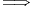LW | ||
| {6, 2}→{2, 2}→{0, 2} | 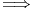LLL | ||
| {6, 2}→{2, 2}→{4, 2}→{0, 2} | 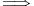LLWL | ||
| {6, 2}→{2, 2}→{4, 2}→{8, 2} | 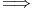LLWW |
Note that in the last case, you end up back at {8, 2}. From there it is just a recursive repeat of sample paths. We will encompass this using the notation LLWWΩ8,2.
Overall,
| Ω8,2 = 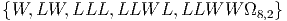 |
Now build Ω8,0. Best case scenario is that you win the first game in one turn. Then you get from
{8, 0} to {8, 2}, from which Ω8,2 encompasses all the possible sample paths.
If you instead lost the first turn ({8, 0}→{6, 0}), we similarly list all the sample paths that arise:
| {6, 0}→{8, 2} | 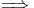LWΩ8,2 | ||
| {6, 0}→{2, 0}→{0, 0} | 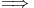LLL | ||
| {6, 0}→{2, 0}→{4, 0}→{0, 0} | 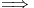LLWL | ||
| {6, 0}→{2, 0}→{4, 0}→{8, 0} | LLWWΩ8,0 |
Overall,
| Ω8,0 = 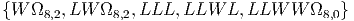 |
Now we can set up equations for the probabilities that correspond to these sample paths. We have that p8,0 = P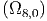, p8,2 = P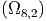, and
| p8,0 | = P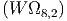 + P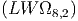 + P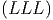 + P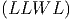 + P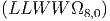 | ||
| = 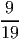p8,2 + 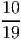 *p8,2 + 0 + 0 + 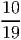 *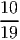 *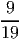 *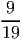 * p8,0 |
Similarly for Ω8,2:
| p8,2 | = P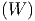 + P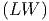 + P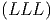 + P + P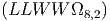 + P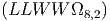 | ||
| = 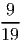 + 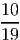 * + 0 + 0 + 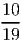 *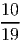 *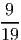 *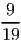 * p8,2 |
We can solve this system of equations to get the following results:
| p8,0 | = 0.5943 | ||
| p8,2 | = 0.7709 |
You’ve successfully amassed 12 dollars, so you walk to the bus station. However, you find that the
bus fare has been raised to 14 dollars. You don’t want to walk the long distance back to your
casino again, so you settle for panhandling on the street. The time is currently 7:30pm.
The people who pass by you can be modeled as a Poisson process with rate 3 per minute. Each
person will toss you 50 cents with probability 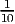. The next bus to take you home is scheduled to
arrive at 7:35pm.
What is the probability that you will have collected a total of 14 dollars by the time the next bus
arrives?
Solution:
Hello